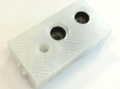

Ultrasone sensor© 2018, ProtoIt Platform: INFENTO |  |
Beschrijving:
Een ultrasone sensor meet de tijd tussen het uitzenden en terug ontvangen van ultrasone geluidsgolven.
Met behulp van de geluidsnelheid in lucht wordt de afstand berekend.
Onderdelen:
Afstandsensor
| Adres | I2C-adres van de driver.Standaard op adres 11 ingesteld. |
| Dichtbij (cm) | De afstand tot waar het signaal Dichtbij wordt uitgezonden.Standaard op 50 cm ingesteld. |
| Veraf (cm) | De afstand waarvanaf het signaal Veraf wordt uitgezonden.Standaard op 100 cm ingesteld. |
| Grensbreedte (mm) | Afhankelijk van de snelheid zal de afstand tot een voorwerp meer of minder nauwkeurig worden gemeten. Dit zou ertoe kunnen leiden dat een signaal achterwege blijft, omdat niet de exact opgegeven waarde maar een iets grotere of kleinere waarde wordt gemeten. Vandaar dat er steeds met een grensbreedte wordt gemeten. Als er een signaal bij 70 cm wordt verlangd en de grensbreedte is ingesteld op 10 mm, dan wordt het signaal uitgezonden bij een afstand tussen 69 en 71 cm. Standaard op 10 mm ingesteld. |
| Interval (msec) | Om de data-uitwisseling tussen sensor en controller te beperken, wordt de sensor niet voortdurend uitgelezen. Stel de interval tussen het uitlezen in.Standaard op 100 milliseconden ingesteld. |
| Afstand (cm) | De afstand waarop het dichtsbijzijnde voorwerp zich bevindt. |
| Dichtbij | Het voorwerp bevindt zich dichtbij (zie de Instellingen). |
| Normaal | Het voorwerp bevindt zich tussen dichtbij en veraf. |
| Veraf | Het voorwerp bevindt zich veraf (zie de Instellingen). |